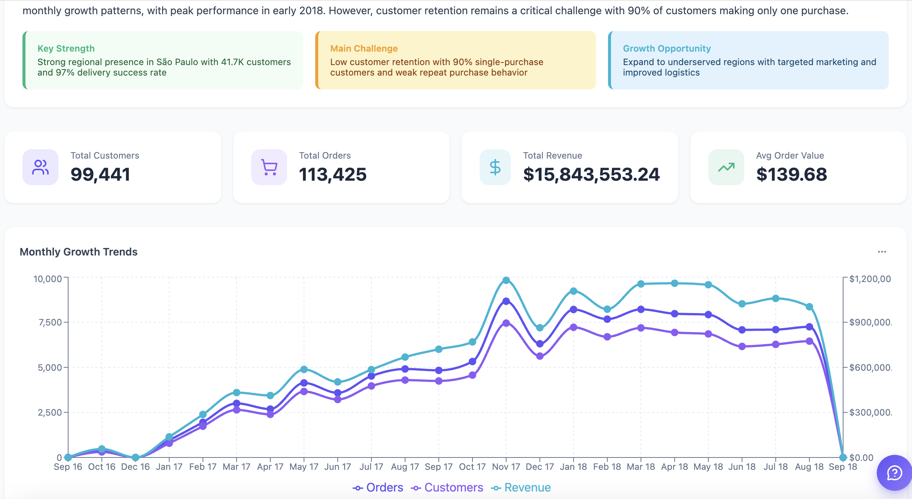

HTML 报告生成指南¶
概览¶
gen_visual_report 把一个问题——"Q4 营收怎么样？"、"分析一下 H2 商户流失"——直接变成一份自包含的 HTML 报告：一个可上下滚动浏览的网页，包含执行摘要、KPI 卡片、图表、表格和叙事段落。Datus-CLI 模式下，页面会自动在浏览器中打开；Datus-SaaS 模式下，直接在 chat 中内联展示。

HTML 报告是一份长篇叙事，数据在生成时就固化下来。页面上没有筛选器，也不会再次访问数据库。如果你要的是接 Superset 等外部 BI 平台的仪表盘，请让主 agent 直接使用已安装的 BI plugin。
如果你想要的是纯文本的 Markdown 报告（不带 HTML 渲染、不带图表），请改用 gen_report agent。
快速开始¶
先把当前 agent 切到 gen_visual_report——之前的 /gen_visual_report ... slash 调用方式已经移除，统一通过 /agent 选择：
（或者直接 /agent（不带参数）打开 agent TUI，选中 gen_visual_report → Enter 编辑、s 设为默认。）切好之后直接提问就行——说清楚问题、时间范围和你想看的维度：
要编辑已有的报告，按显示名或 slug 引用即可：
用 metric 或你自己的 SQL 生成报告¶
gen_visual_report 接受两种同样合法的起点：
-
从 metric 出发 —— 用
@Metrics <subject>.<group>.<metric>三段式直接引用已经生成的指标（subject 树路径 + 指标名），agent 会自动从语义层加载定义、维度和时间窗。项目里已经沉淀了 metric 注册表时最适用（如何创作 Dosi 指标见 Semantic Modeling）。 -
从 SQL 出发 —— 把你想要的 SQL 贴进 prompt，agent 会把这条查询当作数据源执行，再围绕结果组织叙事 + 图表。适合一次性分析，或者还没有现成 metric 的场景。
两种方式也可以混用——主 KPI 用 metric，某一处下钻用你自己的 SQL。
报告是怎么生成的¶
graph LR
A[你的问题] --> B[找到相关的<br/>metric 和表]
B --> C[执行 SQL 查询<br/>并保存结果]
C --> D[组织叙事 + 图表]
D --> E[在浏览器中打开]agent 会先理解你的问题，找到最相关的 metric 和数据表，跑必要的 SQL，然后把执行摘要、KPI、图表、表格、建议组合成一份完整的 HTML 报告。如果之后要修改，再次调用 gen_visual_report 即可原地编辑同一份报告。
按模块独立修改¶
每份报告都是由相互独立的模块组成的——KPI 横幅、单张图表、数据表、建议块、页脚等等。你可以只针对 其中一个 模块做改动，其它部分不会被牵连：
每一次调用都是定点修改：agent 会定位到对应的模块，只编辑它、只重跑相关的查询，其它的版面、叙事和图表都保持原样——保持你之前审过的状态。这样迭代成本很低：调措辞、换图表类型、加一列、删一段，一来一回就能搞定，不需要重写整份报告。
agent 能用到的资源¶
为了把报告做好，gen_visual_report 会复用项目里已经配置好的全部能力：
- 语义层 —— 优先使用已定义的 metric 和维度，能匹配上的话不会临时写 SQL。
- 数据库 —— 读取 schema、取样、并基于已配置的数据源执行查询。
- 知识库 —— 提前查阅项目中已沉淀的参考 SQL 和业务术语表。
- 既有报告 —— 当你让 agent 参考某个已有报告时，它会读取那份报告的数据和组件作为灵感。
这些都不需要你手动调用——写好 prompt 就行。
配置¶
gen_visual_report 开箱即用，无需任何配置。下面这些在 agent.yml 中是可选项：
| 参数 | 必填 | 说明 | 默认值 |
|---|---|---|---|
model |
否 | 使用的 LLM 模型 | 当前配置的默认模型 |
max_turns |
否 | agent 最多迭代多少轮后强制结束 | 30 |
怎么让 prompt 更有效¶
下面这些信息越明确，报告越精准：
- 问题 —— "分析商户流失"、"对比 Q4 同比营收"
- 时间范围 —— "Q4 2025"、"最近 90 天"、"2025 H2"
- 范围限定 —— 地区、分群、产品线、团队
- 想看的维度 —— "按地区"、"按入驻时长分桶"、"月度趋势"
省略也行，agent 会基于项目里的 metric 自行推断，仅在意图严重模糊时才主动追问。